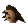

Sir Vyvin

| Config name | sir_vyvin |
| NPC id | 605 |
| Combat level | hidden |
| Options | Talk-to |
| Wander range | 8 tiles from spawn |
| Area folder | area_falador |
| Defined in | scripts/areas/area_falador/configs/falador.npc |
Sir Vyvin
An elderly White Knight.
Show all 1 spawn on the world map → Open in knowledge graph →
Locations
| Area | Coordinates | Level | Count | Map |
|---|---|---|---|---|
| White Knights' Castle | 2983, 3335 | 2 | 1 | view |
Dialogue
PlayerHello.
Sir VyvinGreetings traveller.
PlayerDo you have anything to trade?
Sir VyvinNo, I'm sorry.
PlayerWhy are there so many knights in this city?
Sir VyvinWe are the White Knights of Falador. We are the most powerful order of knights in the land. We are helping the king Vallance rule the kingdom as he is getting old and tired.
PlayerCan I just talk to you very slowly for a few minutes, while I distract you, so that my friend over there can do something while you're busy being distracted by me?
Sir Vyvin... ...what?
Sir VyvinI'm... not sure what you're asking me... you want to join the White Knights?
PlayerNope. I'm just trying to distract you.
Sir Vyvin... ...you are very odd.
PlayerSo can I distract you some more?
Sir Vyvin... ...I don't think I want to talk to you anymore.
PlayerOk. My work here is done. 'Bye!
Quests
Referenced in scripts
scripts/areas/area_falador/scripts/sir_vyvin.rs2scripts/quests/quest_squire/scripts/quest_squire.rs2